Sean Wagstaff · Triumph Tiger 900 Rally · A MotoMap Guide
Cortina d'Ampezzo · Giau Pass · Arabba · South Tyrol · Stelvio Pass · Bormio
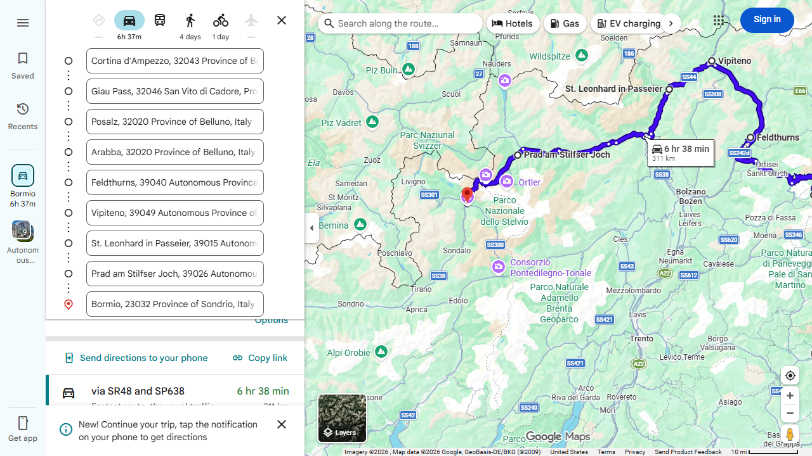
An epic Alpine stage linking two of Europe's greatest motorcycle roads. The route opens in Cortina d'Ampezzo — the jewel of the Dolomites — before climbing the legendary Giau Pass (2,236m), one of the most dramatic switchback roads in Italy. After sweeping through Arabba and the Sella Ronda circuit, the route drops into the South Tyrol (Alto Adige) for a long valley run north through Bolzano, Vipiteno and the Passeier Valley. The finale is Stelvio Pass (2,757m) — the highest paved road in the Alps — descending into Bormio for the night.
⛽ Fuel: Cortina · Arabba · Bolzano · Vipiteno · Bormio
⚠️ Hazards: Giau Pass: narrow road, livestock & cyclists · Stelvio (SS38): heavy motorcycle traffic in summer, cold at summit even in July · South Tyrol valley roads: fast traffic, watch lane discipline
Corvara · Passo Pordoi · Passo Sella · Passo Gardena · Passo Campolongo
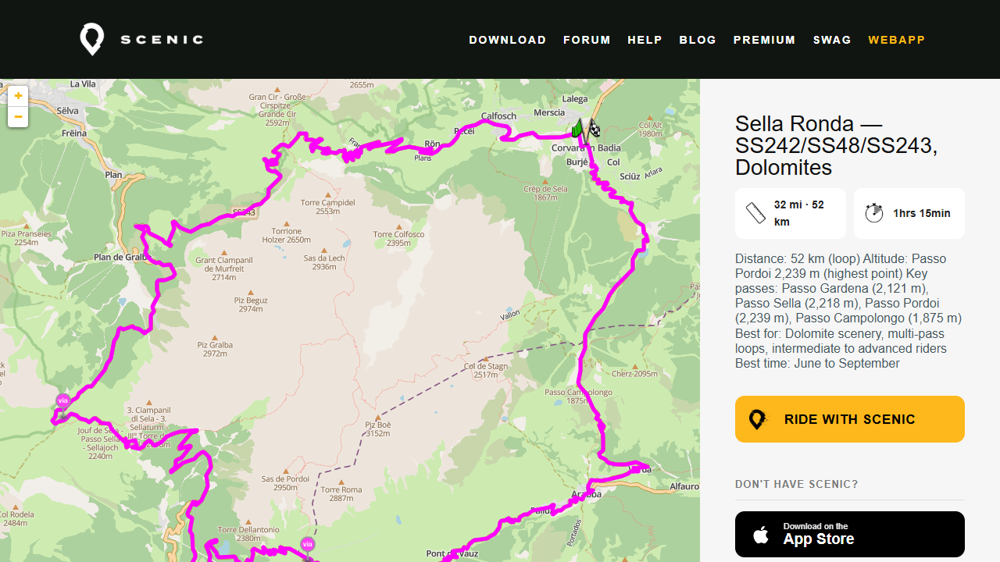
A 52 km loop around the Sella massif crossing four of the most iconic passes in the Dolomites — Gardena (2,121m), Sella (2,218m), Pordoi (2,239m), and Campolongo (1,875m). The Sella Ronda is one of the great motorcycle circuits of Europe: UNESCO World Heritage scenery in every direction, vertical limestone towers and pink-lit cliffs at sunset. The passes are not technically demanding, but the combination of altitude, tight bends, and sheer spectacle makes it a full physical and visual experience. Ride midweek or in early June / late September to avoid heavy tourist traffic. Optional extension via Passo Valparola and Passo Falzarego toward Cortina d'Ampezzo adds ~50 km and two more passes.
📅 Best time: June to September · Weekdays · Early morning
⛽ Fuel: Canazei · Selva di Val Gardena · Corvara
⚠️ Hazards: Heavy tourist traffic July–August · Cyclists on all passes · Cold at summits even in summer
Cortina d'Ampezzo · Passo Giau (2,236m) · Selva di Cadore
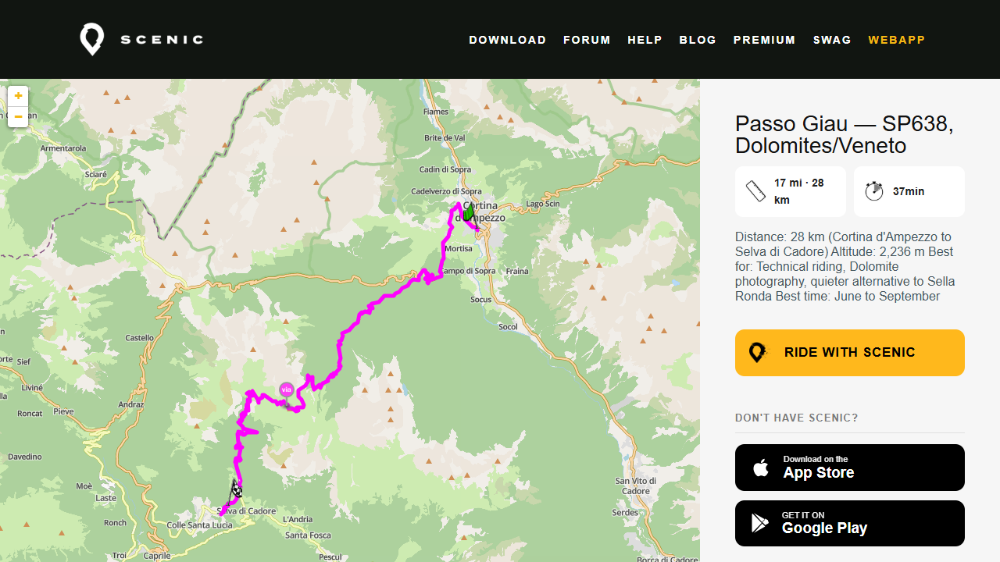
The Dolomite pass that separates tourists from riders. Passo Giau (2,236m) climbs from Cortina d'Ampezzo on the SP638 — a narrower, more demanding road than the main Sella Ronda circuit with tight technical hairpins on the north side that require precision and commitment. The scenery is extraordinary: the Nuvolau massif and Cinque Torri rock formations frame a route that feels earned. Less crowded than the headline passes. Snow-closed well into spring — check before heading up in June. Pairs naturally with Passo Falzarego (2,105m), Passo Staulanza, and Passo Valparola for a 6-pass, ~120 km day.
📅 Best time: June to September · Check for ice on north-facing hairpins early season
⛽ Fuel: Cortina d'Ampezzo · Selva di Cadore
⚠️ Hazards: Tight technical hairpins on north side · Ice risk early/late season · Narrow road, no overtaking room
Prato allo Stelvio · Stelvio Pass (2,757m) · Bormio
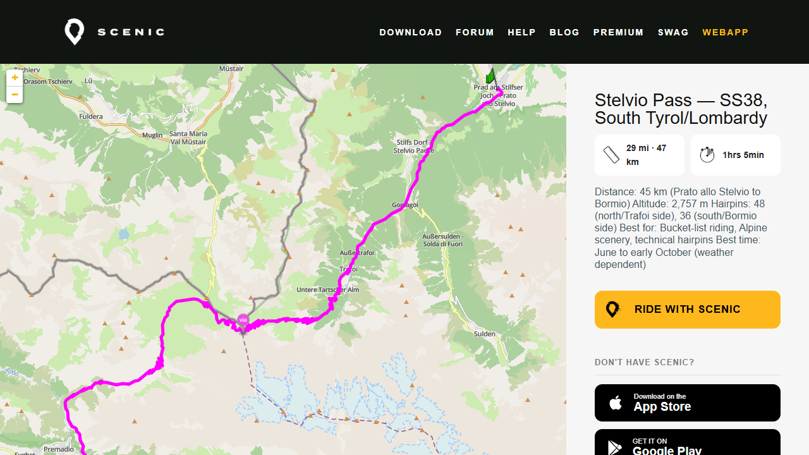
The bucket list. Built between 1820 and 1825, Stelvio Pass (2,757m) is the highest paved mountain pass in the Eastern Alps and one of the most famous roads on earth. The north ascent from Prato allo Stelvio via Trafoi climbs through pine forest and glaciers in 48 consecutive hairpins — a wall of tarmac that must be seen to be believed. The south descent into Bormio runs 36 hairpins through the Braulio Valley, including a stretch of unlit tunnels. Summit temperatures rarely exceed 10°C even in July. Arrive before 9am or after 5pm in July and August — midday brings tour buses, coaches, and half of Europe on two wheels. Optionally extends into Switzerland via the Umbrail Pass at the summit. Combine with Passo Gavia (43 km south) for a legendary two-pass day of ~90 km.
📅 Best time: June to early October · Before 9am or after 5pm in summer
⛽ Fuel: Prato allo Stelvio · Bormio — no fuel between
⚠️ Hazards: Heavy motorcycle and tour bus traffic July–August · Summit rarely above 10°C — bring layers · Unlit tunnels on south descent
Ponte di Legno · Passo Gavia (2,618m) · Bormio
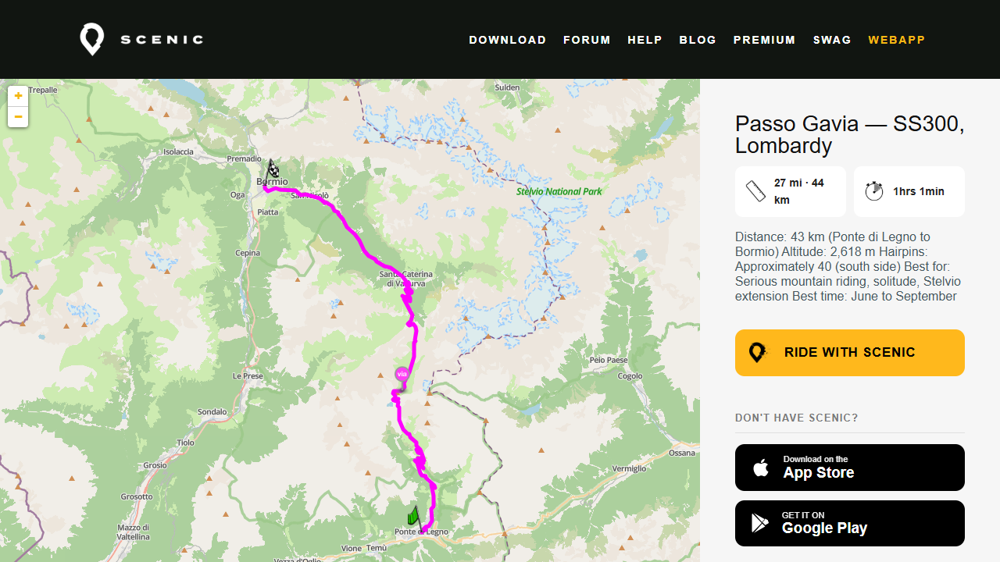
Raw, quiet, and genuinely intimidating — Passo Gavia is the side of the Alps the tour buses don't reach. The second-highest paved pass in Italy, SS300 climbs 17 km at an average 8% gradient from Ponte di Legno with pitches up to 16%. The road is barely wide enough for two vehicles in places. Near-zero guardrails. No services or cell coverage between endpoints. The south side has ~40 hairpins; the summit is bleak, wide, and surrounded by glacial silence. A regular Giro d'Italia stage. Pairs perfectly with Stelvio Pass for a legendary ~90 km two-pass day — the greatest alpine riding combination in Italy. Offline maps essential.
📅 Best time: June to September · Road can retain snow patches into July
⛽ Fuel: Ponte di Legno · Bormio — no fuel between
⚠️ Hazards: Road width: single vehicle in places · Near-zero guardrails · No cell coverage · Gradients to 16% · Snow patches into early summer
Aosta · Saint-Rhémy-en-Bosses · Gran San Bernardo Pass (2,469m)
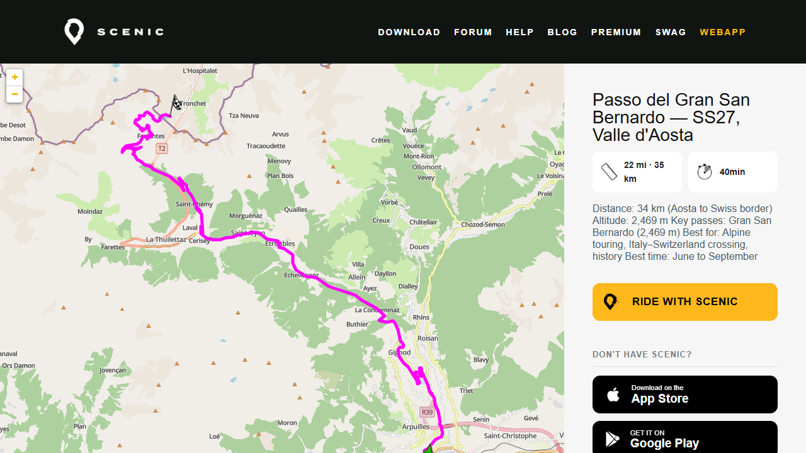
One of the oldest Alpine crossings in existence — used since the Bronze Age and made famous by Napoleon's army crossing in 1800. The SS27 climbs from Aosta in wide, well-maintained hairpins with open views and a relaxed, flowing character that makes it accessible without sacrificing grandeur. At the summit (2,469m), the Augustinian hospice has operated for over a thousand years — the original home of the St Bernard dog breed. A summit lake, restaurant, and museum. The pass crosses into Switzerland; extend into the Simplon Pass or loop back via Lötschberg tunnels for a multi-day Alpine tour.
📅 Best time: June to September · Snow-closed October–June
⛽ Fuel: Aosta · Saint-Rhémy-en-Bosses
⚠️ Hazards: Snow-closed outside season · Cold at summit · Currency changes at Swiss border
Porto di Tremosine · Pieve di Tremosine · Vesio
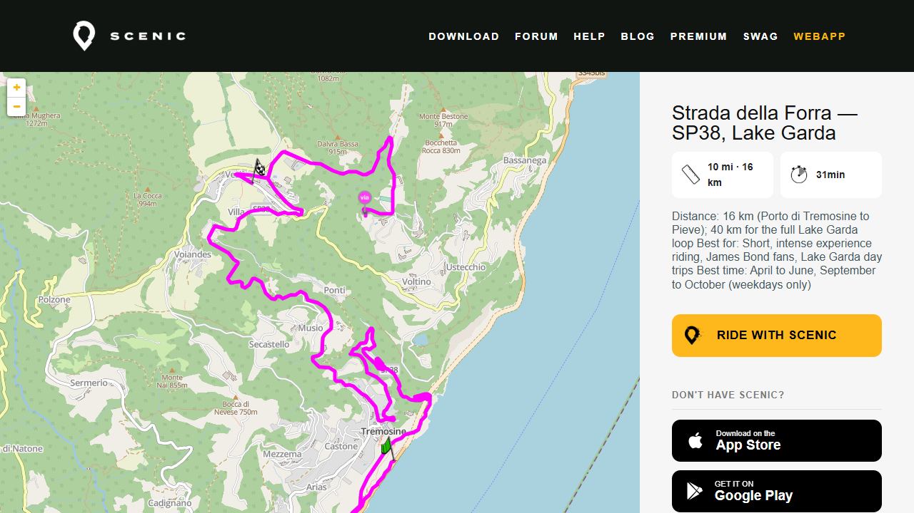
Winston Churchill called it “the eighth wonder of the world.” The Strada della Forra is 16 km of road carved directly into the Brasa River canyon — tight hairpins through dark rock tunnels draped in climbing plants, sudden full-width lake views, and a vertical drop below you most of the way. It featured in James Bond's Quantum of Solace. At the top, Pieve di Tremosine has the Terrazza del Brivido — a glass-floor viewing platform 350m above the lake. The road reopened August 2025 after a rockfall closure and now operates a one-way system uphill from the lakeside junction. Extend to 40 km via SP115 to Limone sul Garda for the full lakeside loop. Weekdays only — no August.
📅 Best time: April–June, September–October · Weekdays only · No August
⛽ Fuel: Limone sul Garda · Riva del Garda
⚠️ Hazards: One-way system — check current direction · Dark unlit tunnels · Narrow road with sheer drops · Rockfall history
Florence · Greve in Chianti · Radda in Chianti · Siena
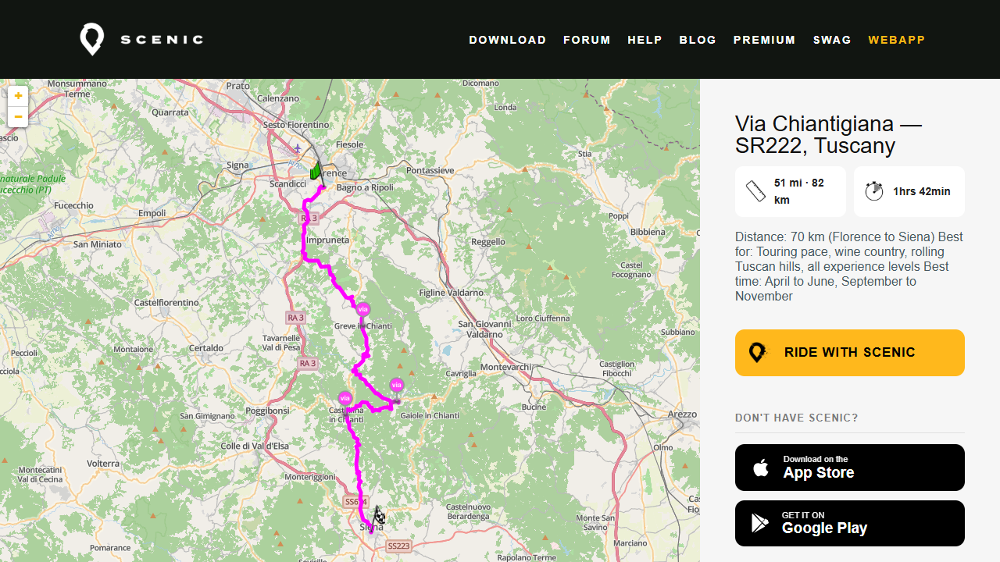
The road through the heart of Chianti wine country — 82 km of smooth, flowing curves between Florence and Siena through vineyards, olive groves, cypress-lined ridges, and medieval hilltop villages. This is a touring road, not an attack road: relaxed rhythm, easy technicality, and remarkable scenery at every turn. Stop at Castello Vicchiomaggio between Greve and Panzano for wine and views; take pici with wild boar ragù in Radda in Chianti. Speed limits are enforced through villages. Extend south from Siena into the Crete Senesi — the dramatic clay badlands between Asciano and Buonconvento — for one of the most otherworldly landscapes in Italy.
📅 Best time: April–June, September–November · Avoid August heat
⛽ Fuel: Florence · Greve in Chianti · Siena
⚠️ Hazards: Speed cameras through villages · Harvest traffic September–October · Some unpaved farm tracks — stay on SR222
Vietri sul Mare · Amalfi · Ravello · Positano
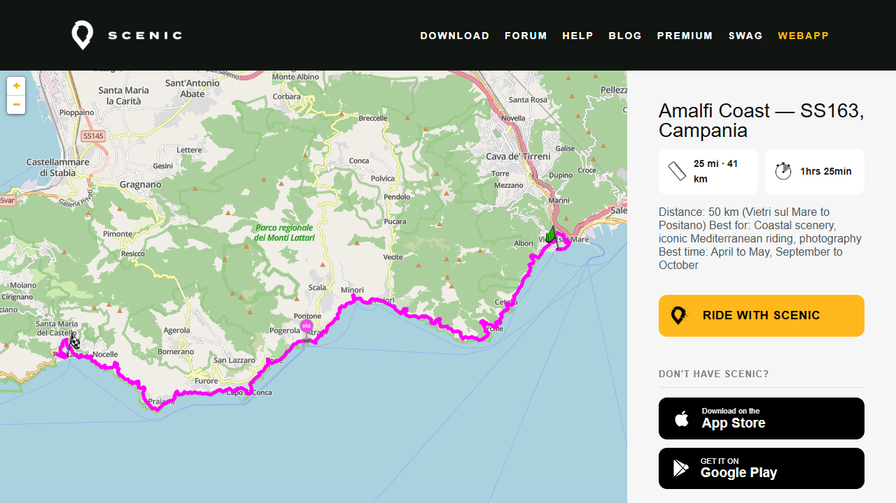
The Amalfitana (SS163) is one of the most iconic roads in Europe: 50 km of clifftop tarmac clinging to the Sorrentine Peninsula above the Tyrrhenian Sea, threading through whitewashed villages, lemon terraces, and sheer limestone drops. UNESCO World Heritage. Ride east to west — Vietri sul Mare to Positano — for sea on your left. A short detour via SS373 to Ravello (15 min) is worth every minute for the Duomo views. There is an unmarked viewpoint ~1 km west of the Grotta dello Smeraldo car park that most riders miss. Do not ride July or August: the road becomes impassable with tour buses. Start at dawn in shoulder season.
📅 Best time: April–May, September–October · Dawn start · Do NOT ride July–August
⛽ Fuel: Vietri sul Mare · Amalfi · Positano
⚠️ Hazards: Tour buses July–August — road essentially impassable · Tight blind bends with oncoming traffic · Steep unguarded drops · Pedestrians in villages
Dorgali · Baunei · Passo Ghenna Silana · Arbatax
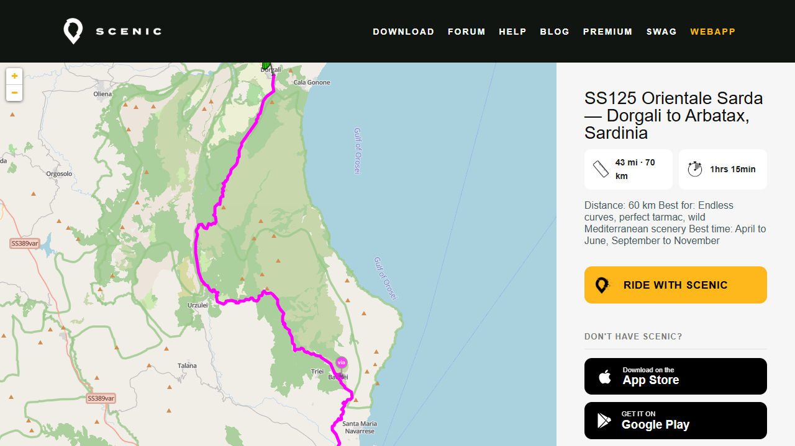
One of the finest motorcycle roads in Europe — and largely unknown outside Italy. Sixty kilometres of continuous curves on flawless asphalt along the eastern flank of the Supramonte mountains, above the Gulf of Orosei and the wildest stretch of coastline in the Mediterranean. Chalk-white limestone peaks, dense maquis scrub, near-zero traffic outside summer. A short detour east through a tunnel near Dorgali drops to Cala Gonone for a panorama of the Gulf. Stop at Passo Ghenna Silana for coffee and the commemorative t-shirts. Getting to Sardinia requires a ferry from Civitavecchia or Genoa to Olbia. There is a ~40 km fuel gap between Dorgali and Baunei — plan accordingly.
📅 Best time: April–June, September–November · Avoid August crowds
⛽ Fuel: Dorgali · Baunei · Arbatax — ~40 km gap between Dorgali and Baunei
⚠️ Hazards: ~40 km fuel gap · No cell coverage in places · Ferry required to reach Sardinia
Alghero · Coastal clifftop road · Bosa
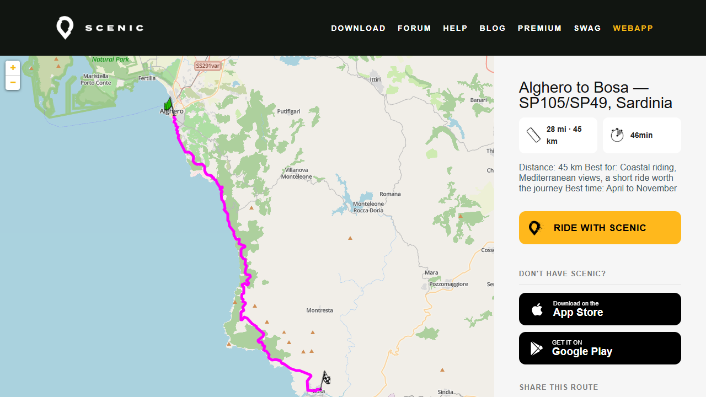
Consistently rated one of the most beautiful coastal roads in the Mediterranean. 45 km of clifftop tarmac above the sea with almost no development between endpoints — no towns, no petrol stations, no traffic lights. Flowing straights dissolve into technical cliff curves, the Tyrrhenian stretching west to the horizon the entire way. About an hour without stops. Bosa at the southern end is a colourful pastel town on the Temo River — the only navigable river in Sardinia — worth an hour of wandering. The road reveals different details in each direction; riding it twice is a legitimate strategy. For a full day combine with SS129 through the Barbagia interior toward Nuoro and loop back via SS131/SS291 for ~250 km of the island's best riding.
📅 Best time: April to November · Morning light heading south (Alghero to Bosa)
⛽ Fuel: Alghero · Bosa — no fuel between
⚠️ Hazards: No fuel between endpoints · Some cliff-edge sections with no barrier · Road designation changes at provincial border (SP105 → SP49)
Share a Google Maps, Waze or Garmin map link — or upload a GPX or KML file.
The description is important. Tell me what it is and when it's happening. I will add it to the planning guide automatically.
You should see the results in a few minutes.
📎 Open Telegram to share a map Paste a link or send a file — include a description